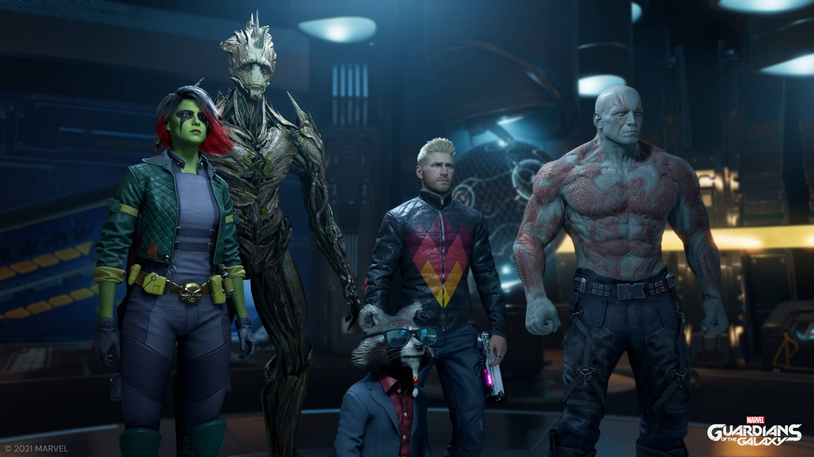
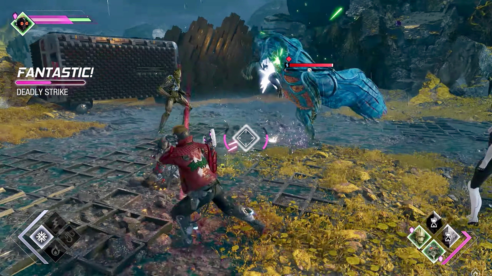
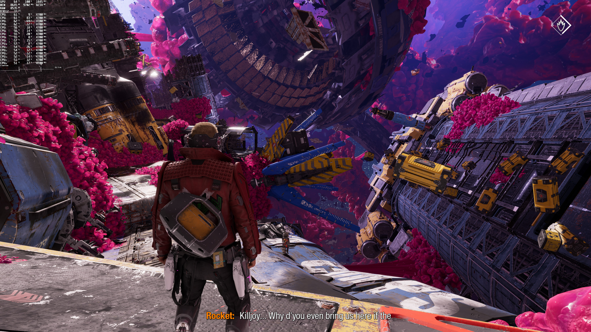

Price: $19.96
Release Date: 10/26/2021
Age Rating: T
Marvel's Guardians of the Galaxy is a 2021 action-adventure game
developed by Eidos-Montréal and published by Square Enix's European
subsidiary, based on the Marvel Comics superhero team Guardians of the
Galaxy. The player assumes control of Peter Quill / Star-Lord from a
third-person perspective. The player can utilize Star-Lord's elemental
guns to defeat enemies. His blasters have four alternate firing modes.
Ice shots temporarily freeze enemies, lightning shots stun them, wind
shots pull enemies far away towards Star-Lord, and Plasma shots induce
fire damages to boss characters. Other members of the titular team,
which include Gamora, Rocket Raccoon, Groot, and Drax the Destroyer, are
not directly playable as they are controlled by artificial intelligence.
Players can enter Guardians Mode in order to issue commands to them
during combat. Each character has four unique skills and abilities which
can be chained together to inflict more damage.

The plot of Marvel's Guardians of the Galaxy takes place several years
after a massive interstellar war that raged across the universe. Among
those looking to survive in a tumultuous Andromeda galaxy are the
newly incorporated "heroes for hire", the Guardians of the Galaxy, who
all hope to make quick money during their adventurous wanderings
around the galaxy. However, while attempting to capture a beast for a
wealthy collector, a seemingly harmless bet between two team members
inadvertently sets in motion a series of catastrophic events that
threaten the peace of the fragile universe unless the team takes
responsibility for their actions and eradicates the threat.
